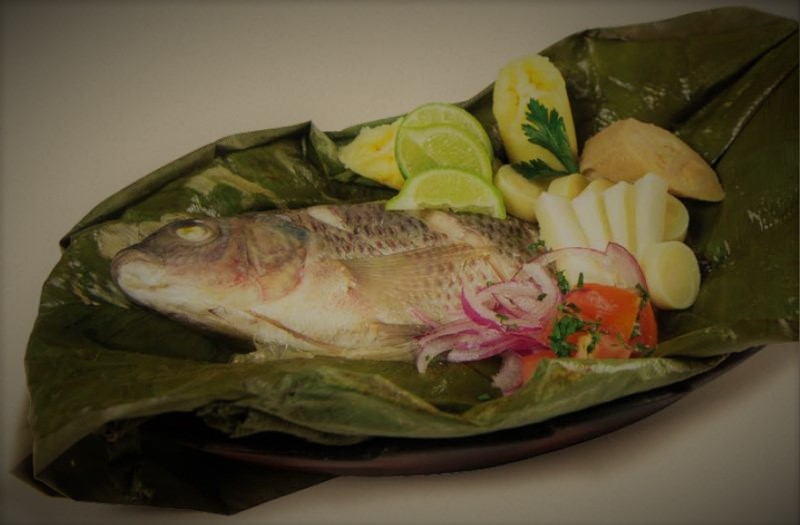
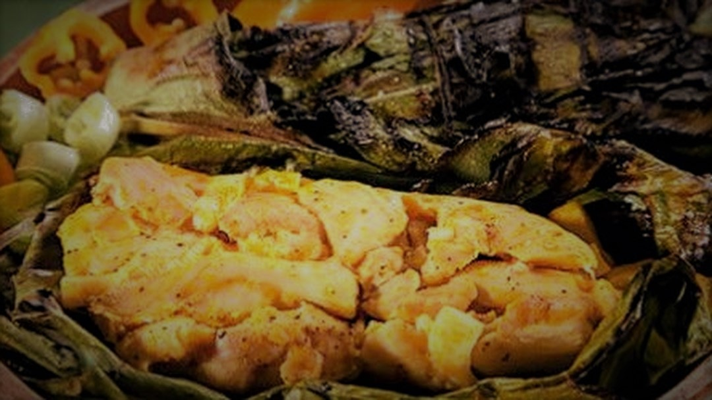

Recetas del oriente ecuatoriano
SECO DE GUANTA
Porciones: 8 Tiempo: 2hs30
ingredientes
- 1 litro de chicha o de vinagre de guineos
- Arroz
- 4 libras de carne de guanta en trozos pequeños
- 2 cebollas picadas finas
- 2 tomates picados
- 2 pimientos picados
- Ajo y cilantro a gusto
- 1 ají picado
- 2 cdas de maní tostado
- 4 cdas de achiote
- Sal y comino a gusto
Proceso
- En un recipiente hondo coloque la carne, añádale la chicha o el vinagre de guineos hasta cubrirla bien y deje reposar durante dos horas
- prepare un refrito con todos los ingredientes
- agregue la carne al terminar, mezcle bien todo y deje cocinar a fuego lento hasta que esté suave
- Servir con arroz.
CEVICHE DE PALMITO

Porciones: 4 Tiempo: 20min
ingredientes
- Sal
- 1 Cebolla paiteña
- 25 ml de jugo de naranja
- 1 cda de cilantro
- 300g de palmitos
- Pimienta a gusto
- 1 cda de perejil
- 1 tomate
- 3 cdas de jugo de limon
Proceso
- En un recipiente agregamos la cebolla cortada en julianas con el limón y sal, dejamos reposar durante 10 minutos.
- Cortamos el palmito en rodajas y lo integramos junto con el ½ tomate cortado en cuadritos, perejil y cilantro picados a nuestra cebolla curtida en limón, añadimos un extra sal y pimienta al gusto y mezclamos.
- Licuamos el tomate restante con el jugo de naranja y lo integramos a la mezcla.
- Servimos nuestro ceviche de palmito junto con chifles, canguil y tostado.
MAITO DE PESCADO

Porciones: 4 Tiempo: 1h
ingredientes
- 500 gr Yuca
- 10 unidades de plátano verde
- 10 unidades de hojas de plátano
- 20 unidades de filete de tilapía
- 200 gr tomate
- 100 gr cebolla perla en corte juliana
- 50 gr cilantro
- 40 gr aceite
- 20 gr menjurje
- sal y pimienta al gusto
Proceso
- Cortamos el plátano verde y la yuca en bastones uniformes para aderezarlos con sal y pimienta los colocamos intercalados sobre la hoja de plátano, sobre este colocamos los filetes de tilapia tiene que estar sazonada al gusto.
- Cortamos en rodajas gruesas al tomate y colocamos sobre la tilapia.
- En un sartén el aceite, la cebolla, el menjurje y salteamos con el cilantro con sal y pimienta, cubrimos con esta preparación a la tilapia y cerramos las hojas de plátano para cocinarlas al vapor por 30 a 40 mn, verificamos que todos los ingredientes estén cocinados y servimos acompañados con arroz blanco!
CHICHA DE JORA

Porciones: 6 Tiempo: 30min
ingredientes
- 10 litros de agua
- 1½ kilo de maíz de jora
- 1 kilo de cebada
- 1 cucharada de clavos de olor
- Azúcar al gusto
Proceso
- Colocar en una sartén la cebada y el maíz de jora y tostar durante 25 minutos.
- En una olla grande, colocar 5 litros de agua, la cebada, el maíz de jora y los clavos de olor. Dejar hervir, revolviendo constantemente la mezcla para que no se espese.
- Cuando la mitad del agua se haya reducido, agregar los 5 litros de agua restantes y dejar hervir durante 1 hora y media más.
- Retirar del fuego, dejar reposar hasta que se enfríe, colar y añadir azúcar al gusto. Colocarlo en una jarra y dejarlo fermentar durante 5 días.
- Servir la chicha de jora frío.
AYAMPACO

Porciones: 8 Tiempo: 1h
ingredientes
- 1 pollo deshuesado cortado en pedazos pequeños
- 1 tallo de palmito finamente picado
- 1 taza de picadillo de cilantro
- 6 dientes de ajo cortado bien fino
- 2 cebollas blancas largas picadas finamente
- 1 cebolla colorada cortada en cuadritos pequeños
- Hojas de bijao
- Sal al gusto
- Aceite de oliva
Proceso
- En primer lugar vas a preparar el aliño. Para esto coloca en la licuadora la cebolla colorada, los dientes de ajo, el cilantro y 30 ml de agua. Bate bien y reserva.
- Luego en un recipiente mezcla muy bien el pollo, la cebolla blanca larga, el palmito, y sal al gusto.
- A continuación agrega al recipiente el aliño reservado y 4 cucharadas de aceite de oliva. Integra todos los ingredientes y reserva este relleno.
- Toma 3 hojas de bijao y extiéndelas sobre una superficie lisa. Pon en el centro 3 cucharadas del relleno preparado
- Envuelve la preparación doblando los bordes de las hojas hacia dentro. Luego une los extremos y amárralos con una tira.
- Coloca los ayampacos en el asador y deja cocer por 40 minutos, volteándolos con regularidad.
- Pasado este tiempo retíralos del fuego y sírvelos acompañados de yuca y guayusa. ¡Deliciosos!